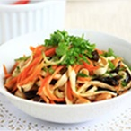

美食网
食物
食谱
蛋黄果
青芒果
芒种养生
首页
食谱大全
食物大全
美食专题
美食分类
减肥饮食
健康饮食
健康美体杂志
您现在的的位置：
首页
>
食谱大全
美食分类
- 筛选
重置筛选条件
菜系：
不限
粤菜
川菜
西北菜
韩国料理
法国菜
日本料理
泰国菜
越南菜
贵州菜
豫菜
湖北菜
东北菜
云南菜
清真菜
山西菜
江西菜
香港菜
潮汕菜
广西菜
菜品：
不限
小吃
佐料
素菜
汤羹
主食
凉菜
热菜
糕点
饮品
私房菜
甜点
粥
面食
火锅
口味：
不限
甜
咸辣
咸甜
酸辣
烹饪方法：
不限
炒
蒸
烤
煎
食材：
不限
莲子
枸杞
白芍
银耳
功效：
不限
抗衰老
补血养血
养肝护肝
开胃消食
银耳性质平和,味甘、淡,无毒,具有润肺生津、滋阴养胃。益气安神,强心健脑等作用,有“滋阴补肾,润肺止咳。
银耳莲子汤
更新时间：2014-10-22
银耳性质平和,味甘、淡,无毒,具有润肺生津、滋阴养胃。益气安神,强心健脑等作用,有“滋阴补肾,润肺止咳。
银耳莲子汤
更新时间：2014-10-22
银耳性质平和,味甘、淡,无毒,具有润肺生津、滋阴养胃。益气安神,强心健脑等作用,有“滋阴补肾,润肺止咳。
银耳莲子汤
更新时间：2014-10-22
银耳性质平和,味甘、淡,无毒,具有润肺生津、滋阴养胃。益气安神,强心健脑等作用,有“滋阴补肾,润肺止咳。
银耳莲子汤
更新时间：2014-10-22
银耳性质平和,味甘、淡,无毒,具有润肺生津、滋阴养胃。益气安神,强心健脑等作用,有“滋阴补肾,润肺止咳。
银耳莲子汤
更新时间：2014-10-22
银耳性质平和,味甘、淡,无毒,具有润肺生津、滋阴养胃。益气安神,强心健脑等作用,有“滋阴补肾,润肺止咳。
银耳莲子汤
更新时间：2014-10-22
银耳性质平和,味甘、淡,无毒,具有润肺生津、滋阴养胃。益气安神,强心健脑等作用,有“滋阴补肾,润肺止咳。
银耳莲子汤
更新时间：2014-10-22
银耳性质平和,味甘、淡,无毒,具有润肺生津、滋阴养胃。益气安神,强心健脑等作用,有“滋阴补肾,润肺止咳。
银耳莲子汤
更新时间：2014-10-22
银耳性质平和,味甘、淡,无毒,具有润肺生津、滋阴养胃。益气安神,强心健脑等作用,有“滋阴补肾,润肺止咳。
银耳莲子汤
更新时间：2014-10-22
首页
上一页
1
2
3
4
5
6
...
14
15
下一页>>
共
2
页
22
条
热门排行
1
解放军指导员海上试验牺牲 曾爆破时救战友
2
解放军指导员海上试验牺牲 曾爆破时救战友
3
解放军指导员海上试验牺牲 曾爆破时救战友
4
解放军指导员海上试验牺牲 曾爆破时救战友
5
解放军指导员海上试验牺牲 曾爆破时救战友
6
解放军指导员海上试验牺牲 曾爆破时救战友
7
解放军指导员海上试验牺牲 曾爆破时救战友
8
解放军指导员海上试验牺牲 曾爆破时救战友
9
解放军指导员海上试验牺牲 曾爆破时救战友
10
解放军指导员海上试验牺牲 曾爆破时救战友
美食精选

如此美女竟然淹死了
如此美女竟然淹死了
如此美女竟然淹死了
如此美女竟然淹死了
如此美女竟然淹死了
如此美女竟然淹死了
如此美女竟然淹死了
如此美女竟然淹死了
版权所有：Copyright © 2015 美食库 All Rights Reserved
 更新时间：2014-10-22
更新时间：2014-10-22
更新时间：2014-10-22
更新时间：2014-10-22
更新时间：2014-10-22
更新时间：2014-10-22
更新时间：2014-10-22
更新时间：2014-10-22
更新时间：2014-10-22
更新时间：2014-10-22
更新时间：2014-10-22
更新时间：2014-10-22
更新时间：2014-10-22
更新时间：2014-10-22
更新时间：2014-10-22
更新时间：2014-10-22
更新时间：2014-10-22
更新时间：2014-10-22